TIA Portal Openness Demo应用程序¶
6.1 概述¶
在开发“TIAPortalOpennessDemo”应用程序时，采用了模型-视图-视图模型（MVVM）架构模式。 参见图 6-1 和图 6-8。因此，该解决方案由多个项目组成，这些项目按不同区域进行组织（参见图 6-9）。此设计旨在进一步简化您开发自己的 Openness 应用程序的入门过程。关于各个区域和项目的描述，请参见表 6-4。
为了向您展示如何简化针对不同版本的 Openness 应用程序的开发流程，我们开发了这款演示应用程序，使其能够仅通过一个解决方案和一个应用程序，即可开发并支持多个版本的 Siemens.Engineering.dll 以及 Openness API。
要实现这一点，您必须在需要引用 Siemens.Engineering.dll 的项目中并行引用该库的多个版本。此外，您还必须在此解决方案中的每个项目属性中禁用"自动生成绑定重定向"选项（参见图 6-2，红色框内）。
关于此情况应如何处理，请参阅表 6-4 第 4 项中的说明。
图 6-1
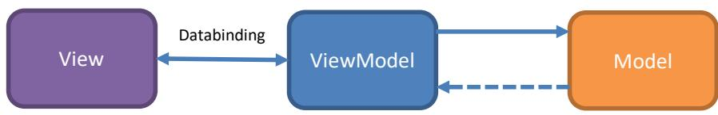
呈现与呈现逻辑为了向您展示如何简化针对不同版本的 Openness 应用程序的开发流程，我们开发了这款演示应用程序，使其能够仅通过一个解决方案和一个应用程序，即可开发并支持多个版本的 Siemens.Engineering.dll 以及 Openness API。
要实现这一点，您必须在需要引用 Siemens.Engineering.dll 的项目中并行引用该库的多个版本。此外，您还必须在此解决方案中的每个项目属性中禁用“自动生成绑定重定向”选项（参见图 6-2，红色框内）。
关于此情况应如何处理，请参阅表6-4第4项中的说明。 图6-2
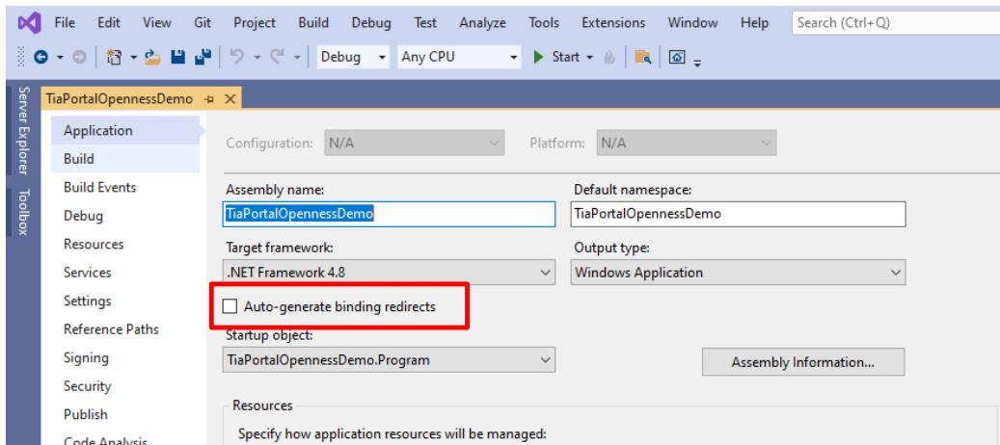
6.2 配置解决方案¶
该解决方案包含 Step7、Sinamics Startdrive、WinCC Professional 和 WinCC Unified 模块的相关项目。
如果您未安装这些模块所需的软件，则必须从解决方案中卸载这些项目。
对于无法获取或您不打算支持的特定版本，同样适用上述做法。在这种情况下，也请将相应的目录从项目中移除。
从解决方案或项目中卸载的任何内容都会被保留，并可在以后重新加载。
该解决方案包含 Step7、Sinamics Startdrive、WinCC Professional 和 WinCC Unified 模块的相关项目。
如果您未安装这些模块所需的软件，则必须从解决方案中卸载这些项目。
对于无法获取或您不打算支持的特定版本，同样适用上述做法。在这种情况下，也请将相应的目录从项目中移除。
6.2.1 卸载项目¶
图6-3
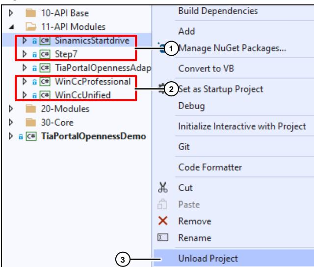
表 6-1
| 编号 | 说明 |
| 1. | 依赖安装的项目 |
| 2. | 依赖安装的项目 |
| 3. | 使用项目右键菜单将项目从解决方案中卸载。 |
6.2.2 重新加载项目¶
图6-4
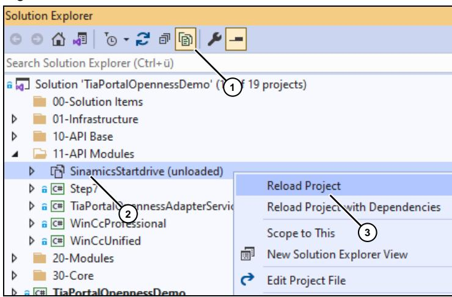
表 6-2
| 编号 | 说明 |
| 1. | |
| 2. | 选择要加载的项目。 |
| 3. | 可通过所选项目的右键菜单将该项目加载到解决方案中。 |
6.2.3 将项目文件夹从项目中排除¶
根据您未使用的版本，必须将这些版本的相应实现从项目中排除。为此，请使用包含“从项目中排除”功能的右键菜单（参见图 6-5）。这样您就可以编译项目和/或解决方案。 正因如此，源代码的清晰结构尤为重要。
以下项目包含特定版本的实现：
• TiaPortalOpennessAdapter – 模型 – V…
• SinamicsStartdrive – 服务 – V…
• 第7步 – 服务 – V…
• TiaPortalOpennessAdapterService – 服务 – V…
• WinCcProfessional – 服务 – V…
• WinCcUnified – 服务 – V…
图6-5
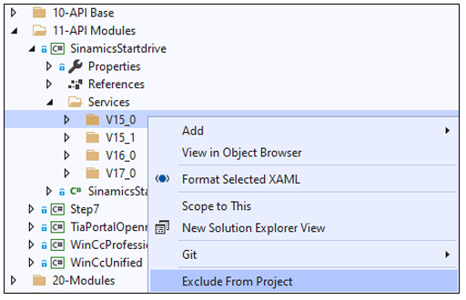
6.2.4 将项目文件夹添加到项目中¶
图6-6
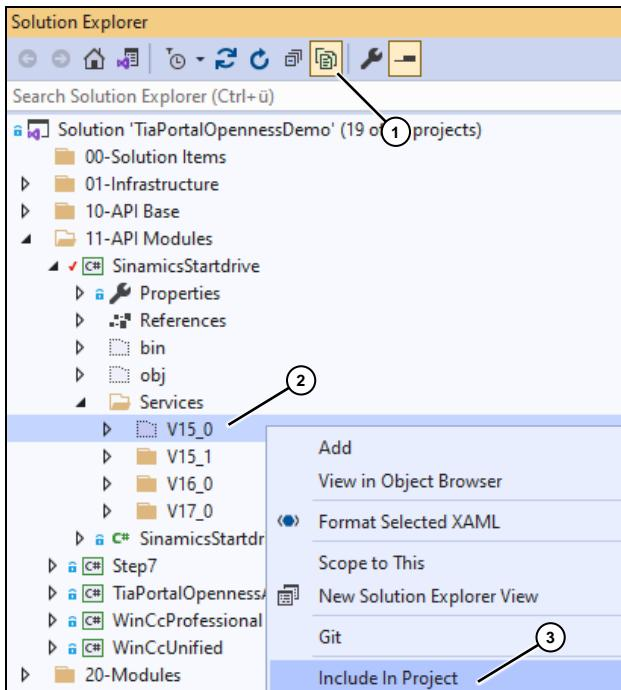
表 6-3
| 编号 | 说明 |
| 1. | 通过项目”SinamicsStartdrive”的右键菜单激活”显示所有文件”功能。 |
| 2. | 您希望将其包含到项目中的被排除项目文件夹。 |
| 3. | 通过项目文件夹的右键菜单执行”包含到项目中”功能。 |
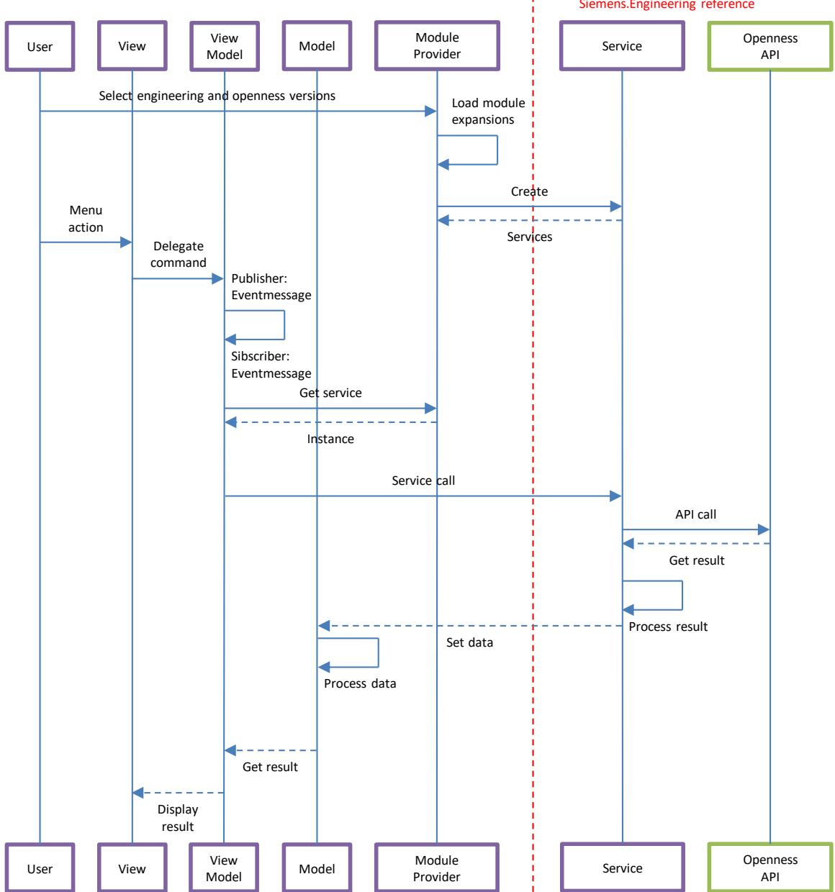
图 6-8
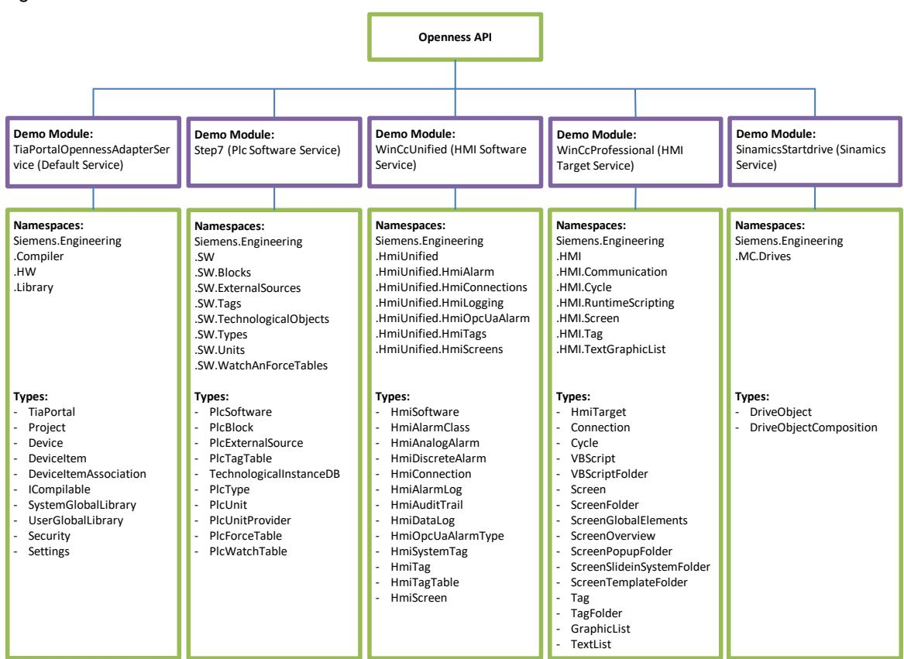
概述了 TIAPortalOpennessDemo 应用程序中使用的主要命名空间和类型。
请按照说明，运行程序“TIAPortalOpennessDemo.exe”，然后使用 Microsoft Visual Studio 打开该项目。
您可以在下载包“108716692_TIA_PortalOpenness_Demo_V17.zip”中找到一个已完全编译的“exe”文件，该下载包位于“TiaPortalOpennessDemo_Application.zip”内。
您可以在下载包"108716692_TIA_PortalOpenness_Demo_V17.zip"中找到一个已完全编译的"exe"文件，该下载包位于"TiaPortalOpennessDemo_Application.zip"内。
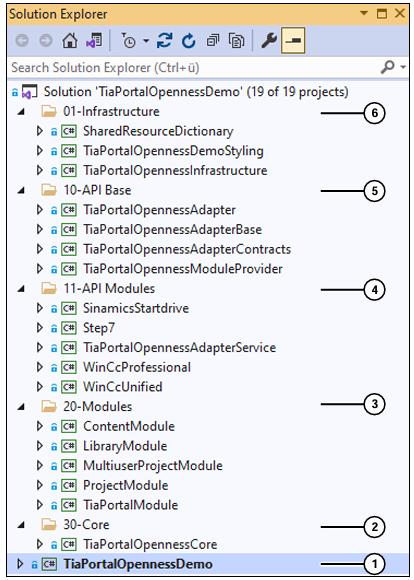
表 6-4
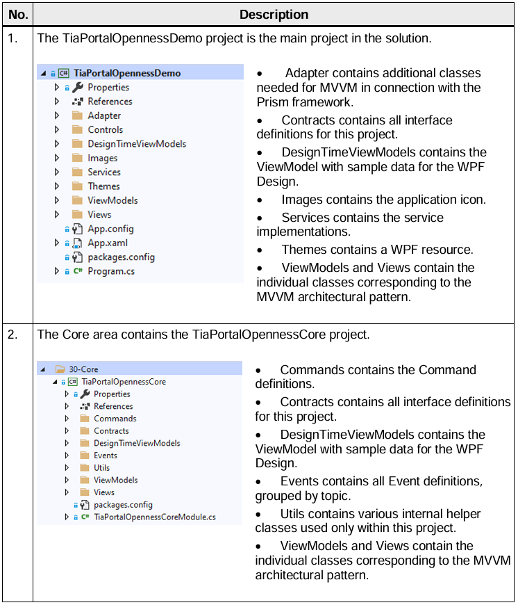
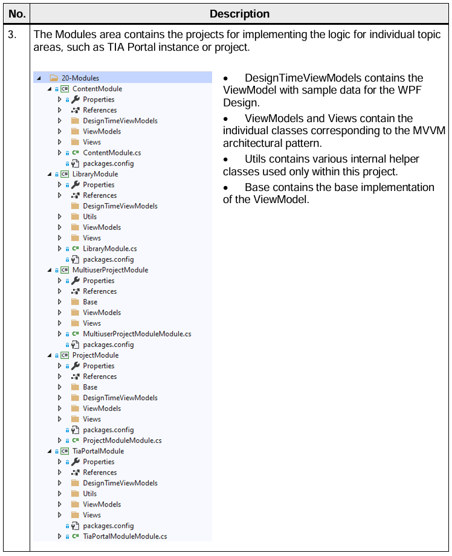
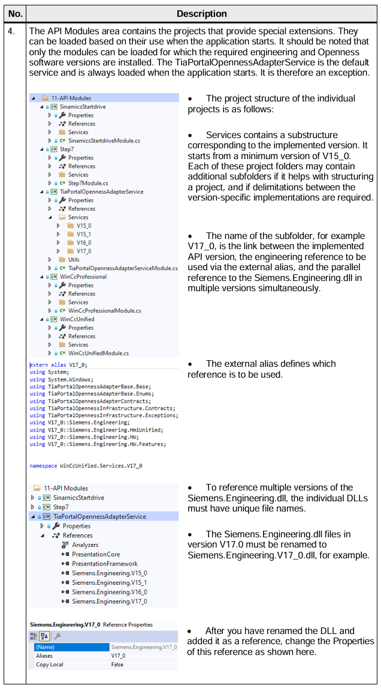
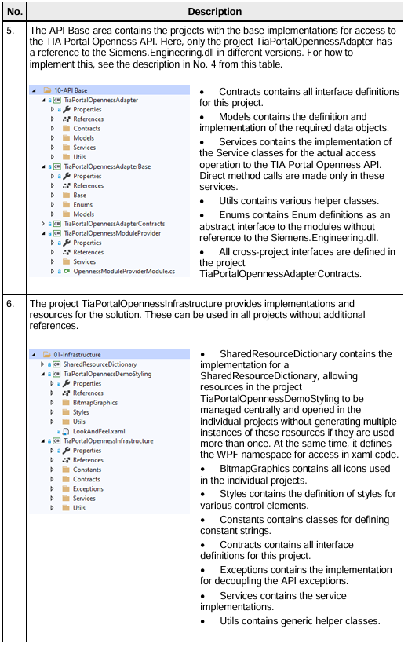
6.3 程序集解析¶
启动应用程序时，您必须选择要使用的 TIA Portal 和 TIA Portal Openness 的版本（参见图 6-10）。 如果您仅使用一个版本，可以勾选“不再显示此窗口”选项。下次启动应用程序时，所选版本将自动加载。点击“确认”以确认您的选择。
如果您勾选了“不再显示此窗口”复选框，但希望稍后重置该选项以便再次选择版本，可以通过“设置”进行操作（参见“设置”）。
已安装的 TIA Portal 版本是通过 GetEngineeringVersions 方法从注册表中读取的，该方法位于 Utils 项目文件夹中的 TiaPortalOpennessAdapter 项目内的 Resolver 类中。
您可以在项目 TiaPortalOpennessDemo 中的 PreSelectionAssemblyVersionViewModel 类，通过 GetEngineeringVersions 和 GetOpennessApiVersions 方法查看该应用程序。
图 6-10
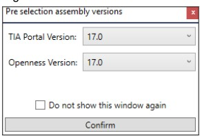
6.4 预选模块¶
要使用 Sinamics Startdrive、STEP 7、WinCC Professional 或 WinCC Unified 的相关功能，必须安装相应的软件模块。随后，TIA Portal Openness Demo应用的模块扩展将从预设目录中加载（参见“设置”），并作为选项提供（参见图 6-11）。
如果您选择“SinamicsStartdriveModule”模块，根据项目大小不同，打开项目可能需要稍长一些时间。这是因为“SinamicsStartdriveModule”会将驱动单元加载到项目树中。每个驱动单元可能包含大量参数。
如果您选择"SinamicsStartdriveModule"模块，根据项目大小不同，打开项目可能需要稍长一些时间。这是因为"SinamicsStartdriveModule"会将驱动单元加载到项目树中。每个驱动单元可能包含大量参数。
首次启动应用程序时，ApplicationSettings 会自动选中所有模块进行加载。请禁用无法加载的模块，以防止加载模块时可能出现的错误（更多信息请参见"设置"）。
请注意，API 调用并非在服务属性 TiaPortal 上执行，而是在 TiaPortal 中同名的 Siemens.Engineering 对象上执行。因此，.Attach() 方法返回的值是一个 TIA Portal 实例，该实例会被赋值给同名的服务属性 TiaPortal。
6.5 主窗口¶
应用程序的主视图分为多个窗格。这些窗格在侧边面板中以显示或可选地隐藏有关 TIA Portal 实例以及项目/全局库的信息。单击内容窗格会自动隐藏侧边面板。
图 6-11
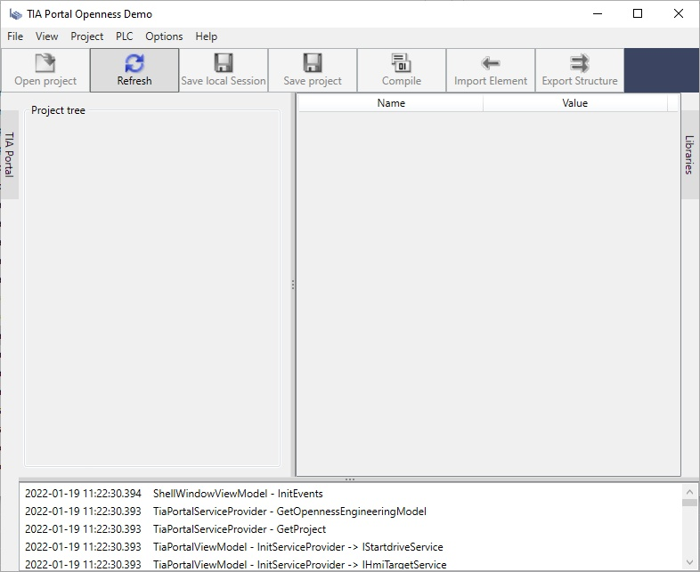
表 6-6
编号 |
说明 |
|---|---|
1. |
按主题分组的应用程序菜单。 |
2. |
直接访问关键功能的工具栏。 |
3. |
此窗格显示项目树。逻辑视图和物理视图之间有所区别。您可以通过"视图"菜单定义要查看哪种视图。 |
4. |
此窗格以列表形式显示在项目树中高亮显示的条目的属性，包括名称和属性值。它使用所谓的 ContentBlackList 来定义不显示的属性。此 ContentBlackList 可以在项目 TiaPortalOpennessAdapter 的项目文件夹 Models.V17_0 中找到。 |
5. |
通过此按钮，您可以显示或隐藏 TIA Portal 侧边面板（参见"TIA Portal"侧边面板）。 |
6. |
通过此按钮，您可以显示或隐藏项目和全局库的侧边面板（参见"库"侧边面板）。 |
7. |
此窗格显示跟踪监视器的信息。所有活动都可以以应用程序日志的形式进行跟踪。这在重现某些行为时特别有用。跟踪监视器的信息也可以通过"关于"对话框复制到剪贴板（参见关于 TIA Portal Openness Demo），并从此处按用户 wished 进行处理。 |
6.6 “TIA Portal” 侧边面板¶
图 6-12
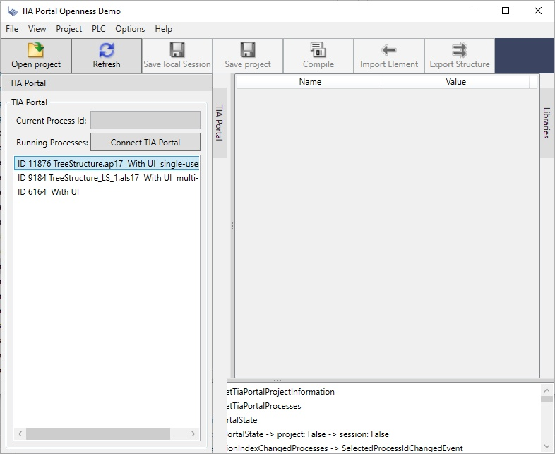
表 6-7
编号 |
说明 |
|---|---|
1. |
应用程序连接到的 TIA Portal 实例的进程 ID。 |
2. |
可以通过此按钮与列表中高亮显示的实例建立连接（参见第 3 项）。 |
3. |
本地 PC 上运行的所有 TIA Portal 实例的列表。关于此实例的信息由进程 ID、项目名称、启动模式信息（带或不带 UI）以及实例类型（单用户或多用户实例）组成。 |
6.7 "库"侧边面板¶
6.7.1 项目库¶
图 6-14
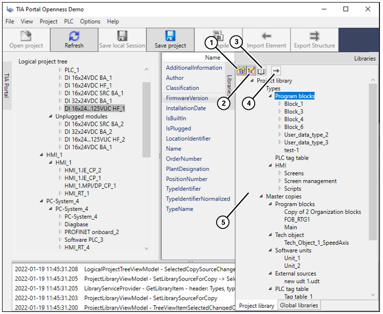
表 6-8
编号 |
说明 |
|---|---|
1. |
为树中高亮显示的组创建新的子组（参见第 5 项）（参见创建或编辑组）。 |
2. |
编辑树中高亮显示的组的名称（参见第 5 项）（参见创建或编辑组）。 |
3. |
显示复制类型版本的对话框（参见将类型版本从项目库复制到项目）。 |
4. |
导出树中高亮显示的类型版本（参见第 5 项）（参见导出类型版本）。 |
5. |
项目库的内容，以树的形式显示。 |
6.7.1.1 创建或编辑组¶
图 6-15
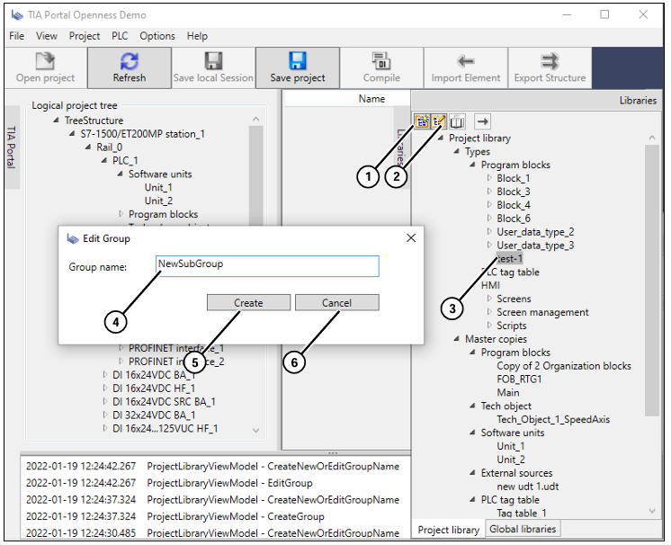
表 6-9
编号 |
说明 |
|---|---|
1. |
为树中高亮显示的组创建新的子组。 |
2. |
编辑树中高亮显示的组的名称。 |
3. |
树中高亮显示的组。 |
4. |
编辑后的树中高亮显示的组的名称。 |
5. |
应用更改。 |
6. |
取消创建或编辑。 |
6.7.1.2 将类型版本从项目库复制到项目¶
图 6-16
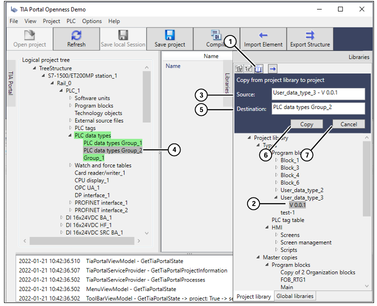
表 6-10
编号 |
说明 |
|---|---|
1. |
显示复制类型版本的对话框。 |
2. |
树中高亮显示的、要复制的类型版本。可能的复制目标在 project tree 中自动标记为绿色。 |
3. |
树中高亮显示的、作为复制操作源的类型版本。 |
4. |
复制操作的目标，在项目树中高亮显示。 |
5. |
项目树中作为复制操作目标的元素高亮显示。 |
6. |
启动复制操作。 |
7. |
取消复制操作。 |
6.7.1.3 导出类型版本¶
图 6-17
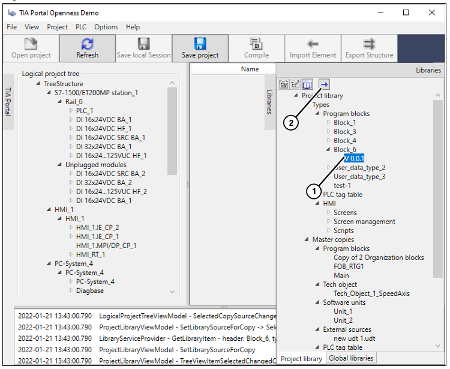
表 6-11
编号 |
说明 |
|---|---|
1. |
树中高亮显示的、要导出的类型版本。 |
2. |
启动复制操作，并在设置中设置为"导出路径"的目录中生成以类型版本名称命名的导出文件（参见设置）。 |
6.7.2 全局库¶
图 6-18
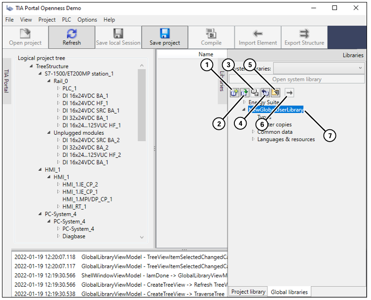
表 6-12
编号 |
说明 |
|---|---|
1. |
创建新的全局用户定义库。 |
2. |
打开全局用户定义库。 |
3. |
保存对全局用户定义库的更改。 |
4. |
关闭选定的全局用户定义库。 |
5. |
用全局用户定义库的内容更新项目库。 |
6. |
导出类型版本。 |
7. |
打开的全局库列表。 |
图 6-19
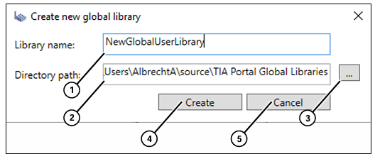
表 6-13
编号 |
说明 |
|---|---|
1. |
要创建的新全局用户定义库的名称。 |
2. |
保存新库的路径（参见设置）。 |
3. |
打开文件夹选择对话框以更改路径（如需要）。 |
4. |
创建新库。 |
5. |
取消操作。 |
6.8 "文件"菜单¶
您可以在"文件"菜单中使用"打开 TIA Portal"来打开新的 TIA Portal 实例。
图 6-20
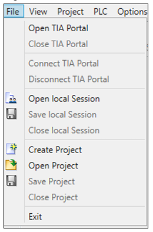
6.8.1 打开 TIA Portal¶
根据序列图（参见图 6-7），通过 ModuleProvider 在类 TiaPortalViewModel 的方法 InitServiceProvider 中加载服务实例：
1_tiaPortalServiceProvider =
2_moduleProvider.GetService(typeof(ITiaPortalServiceProvider)) as
3ITiaPortalServiceProvider;
通过该实例，调用方法 OpenTiaPortalAsync；它创建一个新的 TIA Portal 实例，并将服务属性 TiaPortal 作为值赋值。
6.8.2 关闭 TIA Portal¶
在"文件"菜单中按"关闭 TIA Portal"以关闭打开的 TIA Portal 实例，该实例作为值分配给服务属性 TiaPortal（参见打开 TIA Portal）。任何打开的项目在此过程中将自动关闭。
服务实例（参见打开 TIA Portal）调用方法 CloseTiaPortal，该方法通过服务属性 TiaPortal（TIA Portal 实例）执行 API 调用 TiaPortal.GetCurrentProcess().Dispose();。
6.8.3 连接 TIA Portal¶
图 6-21
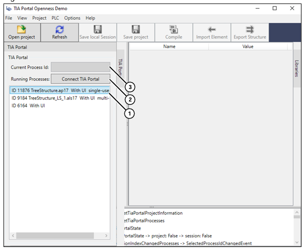
图 6-22
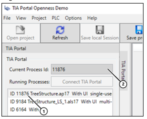
"文件"菜单中的"连接 TIA Portal"或"连接 TIA Portal"按钮（参见图 6-21，第 2 项）可以与现有的 TIA Portal 实例建立连接。此实例中打开的项目将自动加载并打开用于编辑。为此，从所有运行进程的列表中选择实例（参见图 6-21，第 1 项），然后单击"连接 TIA Portal"按钮（参见图 6-21，第 2 项）。与 TIA Portal Openness Demo 应用程序连接的实例的进程 ID（参见图 6-22，第 1 项）将显示在"当前进程 ID:"字段中（参见图 6-22，第 2 项）。
通过服务实例（参见打开 TIA Portal），调用方法 ConnectTiaPortal(int processId)，该方法使用 API 调用 TiaPortal.GetProcess(processId, 5000).Attach(); 与相应 processId 的 TIA Portal 实例建立连接。
请注意，API 调用并非在服务属性 TiaPortal 上执行，而是在 TiaPortal 中同名的 Siemens.Engineering 对象上执行。因此，.Attach() 方法返回的值是一个 TIA Portal 实例，该实例会被赋值给同名的服务属性 TiaPortal。
6.8.4 断开 TIA Portal 连接¶
在“文件”菜单中单击“断开与 TIA Portal 的连接”，即可将演示应用程序从正在运行的 TIA Portal 实例中断开连接，而无需关闭该 TIA Portal 实例。
通过服务实例调用 DisconnectTiaPortal 方法（参见“打开 TIA Portal”）。该方法使用 API 调用 TiaPortal?.Dispose(); 来终止与 TIA Portal 实例的连接。
请注意，此 API 调用 .Dispose() 是在 TIA Portal 实例上执行的，即服务属性 TiaPortal。
6.8.5 打开本地会话¶
您可以使用“文件”菜单中的“打开本地会话”来打开一个本地会话实例。
根据序列图（参见图 6-7），通过 ModuleProvider 在类
BaseMultiuserProjectViewModel: MultiuserServiceProvider = _moduleProvider.GetService(typeof(IMultiuserServiceProvider)) as IMultiuserServiceProvider;
通过该实例，会调用 OpenLocalSessionAsync 方法，该方法会在 TiaPortal 实例的 LocalSessionComposition 上，使用本地会话的项目文件调用 Open 方法。var localSession = tiaPortal.LocalSessions.Open(new FileInfo(projectPath));
单用户项目文件的文件扩展名为 *.ap17，其中 17 代表创建该项目时所使用的版本号。
本地会话的项目文件扩展名为 *.amc
这就是为什么 *.ap 和 *.als 会出现在 TIA Portal Openness Demo应用程序中（参见”TIA Portal”幻灯片面板）。
单用户项目文件的文件扩展名为 *.ap
6.8.6 保存本地会话¶
在“文件”菜单中单击“保存本地会话”，将所有更改保存到本地会话中。在同
通过服务实例调用 SaveLocalSessionAsync 方法（参见“打开本地会话”）。该方法使用 API 调用 CurrentSession.Save();，其中 CurrentSession 是本地会话的实例。
6.8.7 关闭本地会话¶
在“文件”菜单中单击“关闭本地会话”，即可关闭已打开的本地会话。
通过服务实例调用 CloseLocalSessionAsync 方法（参见“打开本地会话”）；该 API 调用
var localSession = TiaPortal.LocalSessions.FirstOrDefault(); localSession?.Close(); 关闭本地会话。
6.8.8 创建项目¶
在”文件”菜单中单击”创建项目”以创建一个新项目。为此，您必须输入项目名称以及项目将被创建和保存的目标文件夹（参见图 6-23）。
图6-23
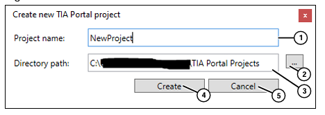
表 6-14
| 编号 | 说明 |
| 1. | 为新项目输入名称。 名称必须符合 Windows 的文件命名规则。 |
| 2. | 打开”文件资源管理器”，选择将要创建新项目的目标目录。 |
| 3. | 新项目将创建的路径是从设置中读取的（参见”设置”），并显示在文本框中。如果需要，可以对其进行编辑。 |
| 4. | 点击”创建”按钮以创建新项目。 通过调用 ValidationProvider，系统将首先验证您的输入；若验证通过，对话框将关闭，并创建新项目。 |
| 5. | 如需中止该过程，请点击”取消”按钮。 |
根据序列图（见图 6-7），通过 ModuleProvider 在类
BaseProjectViewModel: ProjectServiceProvider = _moduleProvider.GetService(typeof(IProjectServiceProvider)) as IProjectServiceProvider;
通过该实例，调用了 CreateProjectAsync 方法，该方法通过 API 调用 var newProject = TiaPortal.Projects.Create(opennessDemoModel.ProjectModel.TargetDirectory, opennessDemoModel.ProjectModel.ProjectName); 来创建一个新项目。
6.8.9 打开项目¶
通过“文件”菜单中的“打开项目”打开一个项目。为此，请使用文件选择对话框选择所需的项目文件（参见图 6-24）。 文件过滤器设置为 *.ap*，以便显示所有项目版本。随后项目打开，项目数据（项目树）被加载到应用程序中（参见图 6-26 和图 6-27）。
通过服务实例（参见“创建项目”），调用 OpenProjectAsync(string projectPath) 方法。该方法使用 API 调用 Project newProject = tiaPortal.Projects.Open(new FileInfo(projectPath)); 来打开作为参数传递的所选项目。
图 6-24
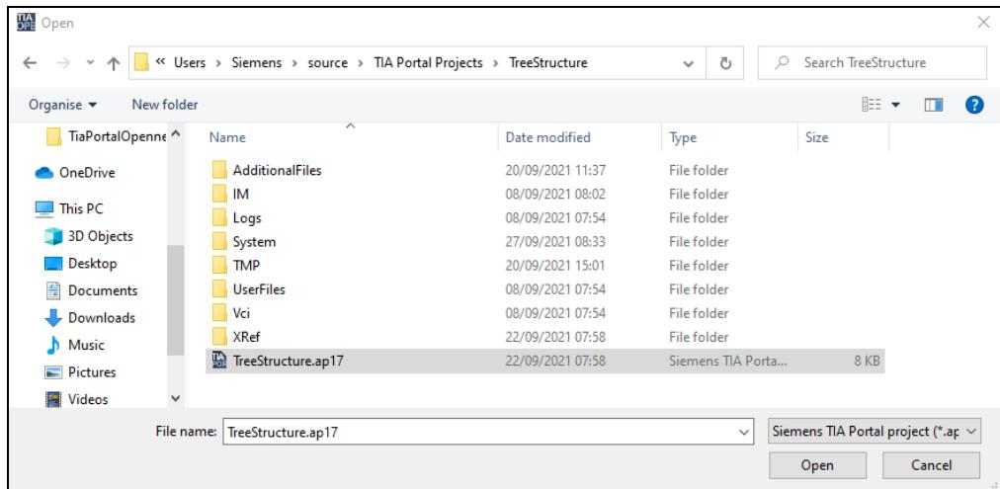
6.8.10 保存项目¶
“文件”菜单中的“保存项目”可将项目中的所有更改保存下来。
通过服务实例（参见“创建项目”），调用 SaveProjectAsync 方法。该方法使用 API 调用 ((Project)CurrentProject).Save(); 来保存对项目所做的所有更改。
6.8.11 关闭项目¶
“文件”菜单中的“关闭项目”选项可关闭当前打开的项目。
通过服务实例（参见“创建项目”），调用 CloseProjectAsync 方法。该方法使用 API 调用 var project =
先调用 TiaPortal.Projects.FirstOrDefault(); 来确定当前打开的是哪个项目。然后通过 API 调用 project?.Close(); 关闭该项目。
| 查看 | 项目 | PLC | 光学 |
| 刷新 | |||
| 逻辑树 | |||
| 物理树 | |||
6.9 “视图”菜单¶
图 6-25
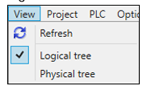
通过“视图”菜单，您可以切换项目中的逻辑树结构和物理树结构。参见图 6-26 和图 6-27。
根据序列图（参见图 6-7），在“视图”菜单中单击“逻辑树”或“物理树”将调用 TiaPortalOpennessCore 项目中 MenuViewModel 类中的命令处理程序 SetNavigationPath(string navigationPath)。 系统将要显示或导航到的视图名称将作为参数传递。
<MenuItem Header="_View">
<MenuItem
Command="{Binding TreeViewNavigationCommand}"
CommandParameter="LogicalProjectTreeView"
Header="Logical tree"
IsChecked="{Binding ShowLogicalTree}" />
<MenuItem
Command="{Binding TreeViewNavigationCommand}"
CommandParameter="PhysicalProjectTreeView"
Header="Physical tree"
IsChecked="{Binding ShowLogicalTree, Converter={StaticResource IbConverter}}" />
</MenuItem>
命令处理程序 SetNavigationPath(string navigationPath) 随后会调用 Navigate(string navigationPath) 方法，其中会执行 _regionManager.RequestNavigate(RegionNames.ProjectTreeRegion, navigationPath); 这一操作。
这将显示菜单（CommandParameter）所选的视图。
视图的 ViewModel 会查找所需的数据，并将其准备好以供显示。
例如，要显示“逻辑树”，需要调用 _regionManager.RequestNavigate(RegionNames.ProjectTreeRegion, navigationPath); 方法，从而触发 LogicalProjectTreeViewModel 类中的 OnNavigatedTo(NavigationContext navigationContext) 方法，该方法会调用基类 BaseProjectViewModel 中的 LoadTreeDataAsync(true); 方法。 然后，通过 ProjectService 调用 _projectService.LoadTreeStructure(loadLogicalTree); 方法，该方法进而通过多次 API 调用获取项目树，并将其作为值赋给项目模型 _projectModel.LogicalTree; 的属性。
6.9.1 逻辑视图¶
这里有一个例外，即“设备组”，因为它没有导轨或机架。因此，使用设备名称作为额外的分组依据。
逻辑树结构将所有设备按机架或机柜进行分类。所有未插电的设备均与机架或机柜位于同一层级（参见图6-26中的红色方框）。 图6-26
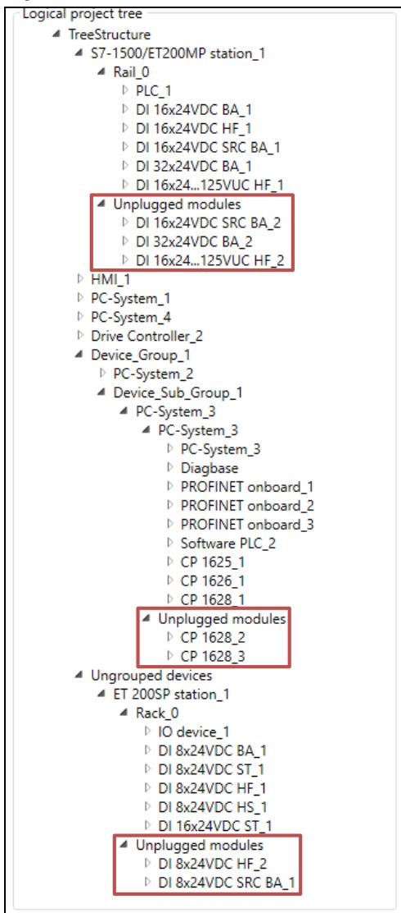
6.9.2 物理视图¶
在物理树结构中，所有设备都位于一个站点的下方；在此，一条轨道及其上的所有设备（包括未连接的设备）位于同一层级。有关哪些设备已断开连接、哪些未断开连接的信息，请参阅属性视图（参见图 6-28）。
图6-27
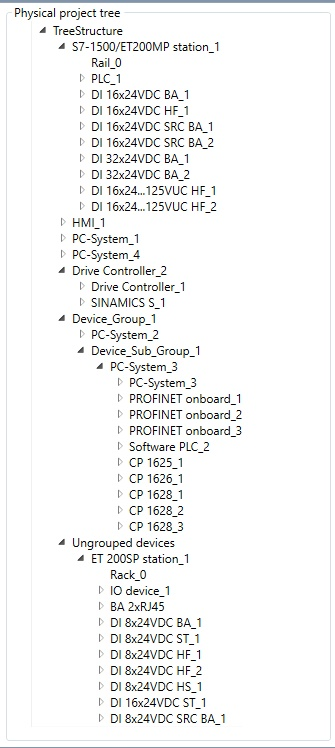
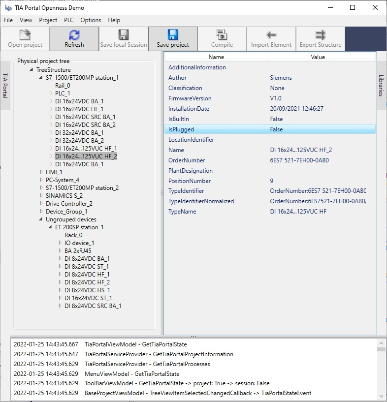
物理项目树
6.10 "项目"菜单¶在此菜单中，您可以找到可在项目级别或项目项上运行的功能。 图6-29 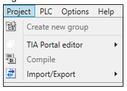 6.10.1 创建新组¶图6-30 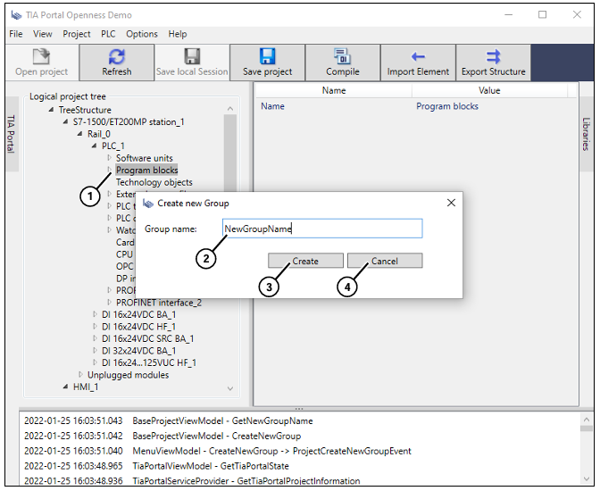 表 6-15
根据序列图（参见图 6-7），通过 ModuleProvider 在类 BaseProjectViewModel 的方法 InitProjectServiceProvider 中加载服务实例： 1ProjectServiceProvider =
2_moduleProvider.GetService(typeof(IProjectServiceProvider)) as
3IProjectServiceProvider;
通过该实例，调用方法 ProjectServiceProvider.CreateNewGroup(newGroupName, (string)SelectedItem.Header, (Guid)SelectedItem.Tag, true);。这里，正在创建的组的名称、高亮显示的元素的名称（参见图 6-30，第 1 项）和高亮显示元素的 GUID 作为参数传递。调用中的第四个参数表示我们正在处理逻辑项目树，并且项目项应在其中找到。 使用这些信息找到项目项，并进行 var parentProjectItem = GetProjectItem(parentGroup, tag, logicalTree); 调用。 找到的项目项同时传递给 GroupEditorService（ProjectServiceProvider 的子服务）和 _plcSoftwareService 的实例。每个服务自行决定是否可以处理项目项。 1if (parentProjectItem != null)
2{
3 using (var groupService = new GroupEditorService(_traceLogService))
4 {
5 groupService.CreateGroup(parentProjectItem, groupName);
6 }
7 _plcSoftwareService?.CreateGroup(parentProjectItem.DeviceItem, groupName);
8}
如果高亮显示的元素是 DeviceUserGroup，则通过 groupService 为该项目创建新组，API 调用为 typeGroup.Groups.Create(groupName); 并添加 DeviceUserGroupComposition。 如果高亮显示的元素是 PLC 类型，则使用 _plcSoftwareService 来确定它实际是什么类型的 PLC 类型；并通过其类型特定的 API 调用 -UserGroupComposition.Groups.Create(groupName); 创建并添加新组。 6.10.2 “TIA Portal 编辑器” 子菜单¶通过此菜单，您可以控制 TIA Portal 中的视图，并在 TIA Portal 中显示高亮显示的项目项。实际上，这使其成为某种遥控器。 图6-31 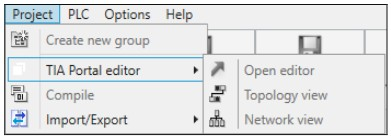 6.10.2.1 打开编辑器¶"项目 -> TIA Portal 编辑器"菜单中的"打开编辑器"让您可以为项目树中高亮显示的元素在 TIA Portal 中打开相应的硬件编辑器，然后在此编辑项目项。 根据序列图（参见图 6-7），通过 ModuleProvider 在类 BaseProjectViewModel 的方法 InitProjectServiceProvider 中加载服务实例： 1ProjectServiceProvider =
2_moduleProvider.GetService(typeof(IProjectServiceProvider)) as
3IProjectServiceProvider;
根据所选的视图，在 LogicalProjectTreeViewModel 或 PhysicalProjectTreeViewModel 类中调用方法 OpenEditor。在该方法中，在服务实例上调用同名的 OpenEditor 方法。 基于名称（header）和 GUID，服务确定关联的项目项并执行实际的 API 调用。如果项目项不是 Device 类型，则通过反射尝试查找"ShowInEditor"方法。如果项目提供此类方法，则运行它。否则，项目项无法在任何硬件编辑器中显示。 1var projectItem = GetProjectItem(header, tag, logical);
2if (projectItem != null)
3{
4 if (projectItem.DeviceItem is Device projectItemDevice)
5 {
6 projectItemDevice.ShowInEditor(View.Device);
7 }
8 else
9 {
10 var type = projectItem.DeviceItem.GetType();
11 var methodInfo = type.GetMethod("ShowInEditor");
12 if (methodInfo == null && type.BaseType != null)
13 {
14 methodInfo = type.BaseType.GetMethod("ShowInEditor");
15 }
16 if (methodInfo != null)
17 {
18 methodInfo.Invoke(projectItem.DeviceItem, null);
19 }
20 }
21}
6.10.2.2 拓扑视图¶"项目 -> TIA Portal 编辑器"菜单中的"拓扑视图"让您可以打开 TIA Portal 中项目的拓扑视图（参见图 6-32）。 根据序列图（参见图 6-7），通过 ModuleProvider 在类 BaseProjectViewModel 的方法 InitProjectServiceProvider 中加载服务实例： 1ProjectServiceProvider =
2_moduleProvider.GetService(typeof(IProjectServiceProvider)) as
3IProjectServiceProvider;
在 BaseProjectViewModel 类中，调用方法 OpenTopologyEditor，其中在服务实例上运行调用 ProjectServiceProvider.ShowEditor(“Topology”);。 服务首先使用名为"Topology"的视图来确定相应的 View Type，然后执行 API 调用。 1var viewType = EnumService.GetEnumValue<View>(viewName);
2CurrentProject.ShowHwEditor(viewType);
图6-32 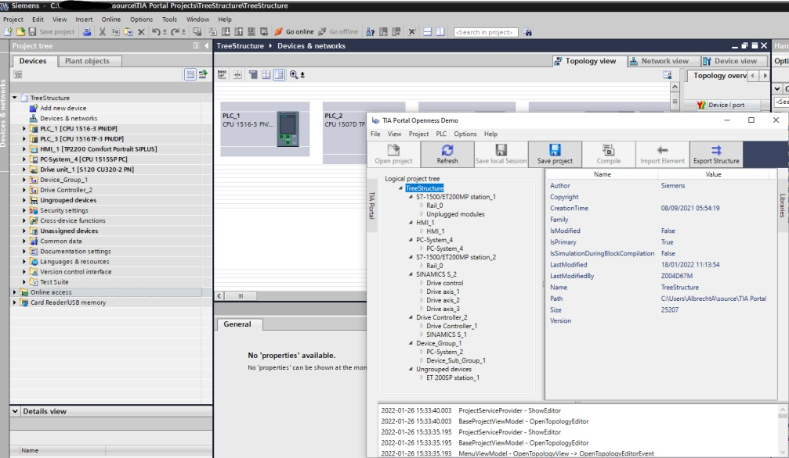 6.10.2.3 网络视图¶"项目 -> TIA Portal 编辑器"菜单中的"网络视图"让您可以打开 TIA Portal 中项目的网络视图（参见图 6-33）。 根据序列图（参见图 6-7），通过 ModuleProvider 在类 BaseProjectViewModel 的方法 InitProjectServiceProvider 中加载服务实例： 1ProjectServiceProvider =
2_moduleProvider.GetService(typeof(IProjectServiceProvider)) as
3IProjectServiceProvider;
在 BaseProjectViewModel 类中，调用方法 OpenNetworkEditor，其中在服务实例上执行调用 ProjectServiceProvider.ShowEditor(“Network”);。 服务首先使用名为"Network"的视图来确定相应的 View Type，然后执行 API 调用。 1var viewType = EnumService.GetEnumValue<View>(viewName);
2CurrentProject.ShowHwEditor(viewType);
图6-33 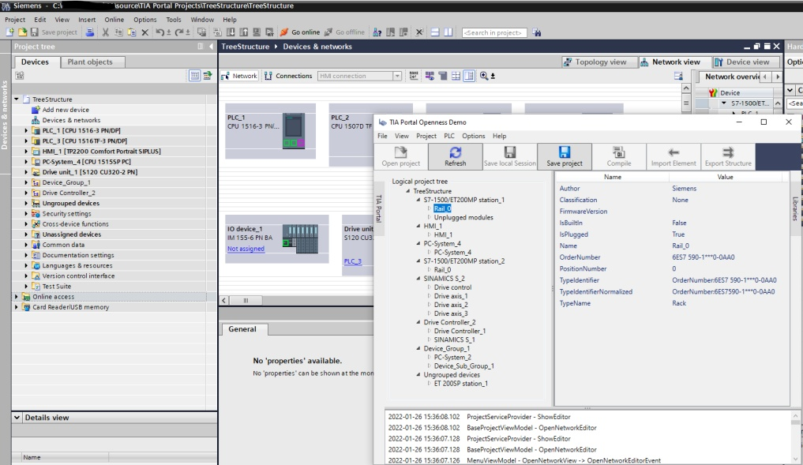 6.10.3 编译¶图6-34 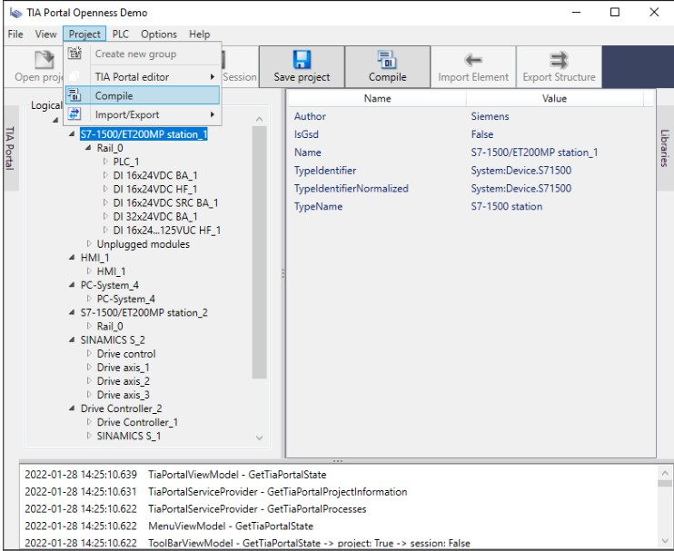 编译项目树中高亮显示的元素，只要该对象实现了接口 ICompilable（参见图 6-34）。 根据序列图（参见图 6-7），通过 ModuleProvider 在类 BaseProjectViewModel 的方法 InitProjectServiceProvider 中加载服务实例： 1ProjectServiceProvider =
2_moduleProvider.GetService(typeof(IProjectServiceProvider)) as
3IProjectServiceProvider;
根据所选的视图，在 LogicalProjectTreeViewModel 或 PhysicalProjectTreeViewModel 类中调用方法 DoCompile。在该方法中，在服务实例上调用同名方法。 1ProjectServiceProvider.DoCompile((string)SelectedItem.Header,
2(Guid)SelectedItem.Tag, navigationContext.ShowLogicalTree);
确定实际 API 调用的项目项和编译器。这里，编译器被给予要编译的项目项。_compilerResult 被评估并写入 Trace 输出。 1var projectItem = GetProjectItem(header, tag, logical);
2if (projectItem != null)
3{
4 var methodInfo = GetGenericMethodInfo(projectItem, typeof(ICompilable));
5 if (methodInfo != null)
6 {
7 var compiler = GetCompiler(methodInfo, projectItem);
8 if (compiler != null)
9 {
10 _compilerResult = compiler.Compile();
11 var compilerMessage = "Compiling " + projectItem.Header;
12 WriteTraceLogProxy(processInfo.ProcessMessage + " - " + compilerMessage);
13 if (_compilerResult.Messages.Count > 0)
14 {
15 if (_compilerResult.Messages != null && _compilerResult.Messages.Count > 0)
16 {
17 GetCompilerMessages(string.Empty, string.Empty, _compilerResult.Messages);
18 }
19 }
20 }
21 }
22}
6.10.4 “导入/导出” 子菜单¶图6-35 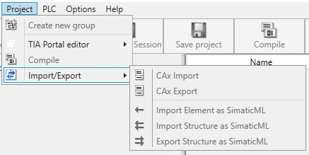 6.10.4.1 CAx 导入¶CAx 导入用于以 AML 格式导入设备数据。支持以下导入选项。 图6-36 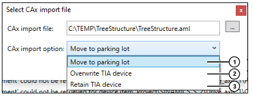 表 6-16
1if (CurrentProject != null)
2{
3 using (var importService = new ImportService(_traceLogService))
4 {
5 importService.CaxImport((Project)CurrentProject, importFileInfo, importOption);
6 }
7 return true;
8}
对于实际的 API 调用，首先找到导入提供程序 var importProvider = project.GetService 6.10.4.2 CAx 导出¶图6-37 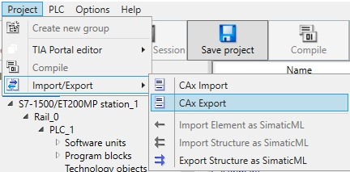 CAx 导出以 AML 格式导出设备数据。CAx 导出在项目级别或设备级别都是可能的。 1if (CurrentProject != null)
2{
3 using (var exportService = new ExportService(_traceLogService, _settingsService))
4 {
5 exportService.CaxExport((Project)CurrentProject);
6 }
7 return true;
8}
对于实际的 API 调用，首先找到导入提供程序 var exportProvider = project.GetService 6.10.4.3 将元素导入为 Simatic ML¶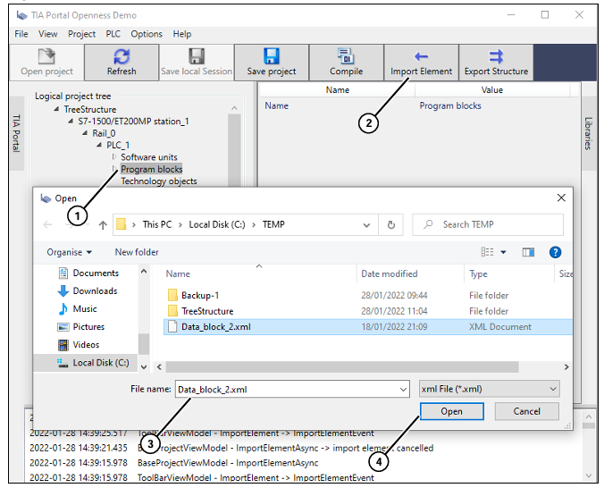 表 6-17
图6-38 图6-39 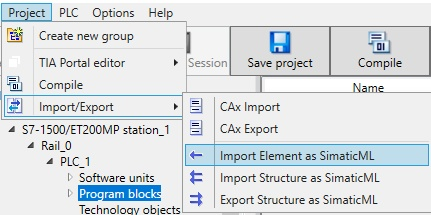 根据序列图（参见图 6-7），通过 ModuleProvider 在类 BaseProjectViewModel 的方法 InitProjectServiceProvider 中加载服务实例： 1ProjectServiceProvider =
2_moduleProvider.GetService(typeof(IProjectServiceProvider)) as
3IProjectServiceProvider;
根据所选的视图，在 LogicalProjectTreeViewModel 或 PhysicalProjectTreeViewModel 类中调用方法 ImportElementAsync。在该方法中，在服务实例上调用同名方法。 1ProjectServiceProvider.ImportElementAsync(fileInfos, true,
2(string)SelectedItem.Header, (Guid)SelectedItem.Tag,
3LogicalTreeView);
6.10.4.4 将结构导入为 Simatic ML¶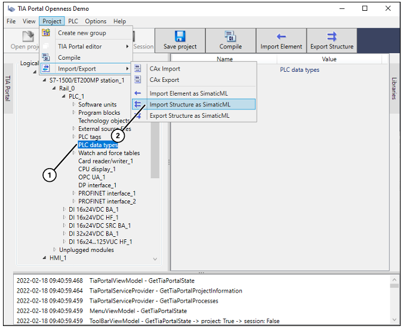 表 6-18
请注意，选定的导入目录本身（参见图 6-41）作为根目录不会被导入。仅导入选定目录中的所有子文件夹。 图6-40 图6-41 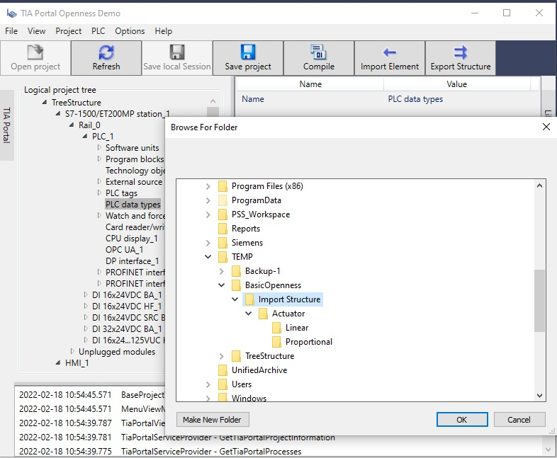 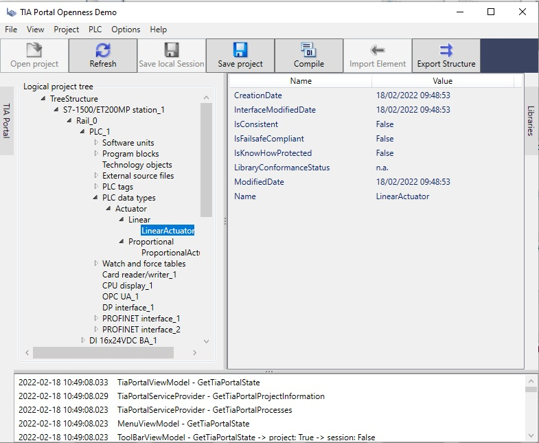 根据序列图（参见图 6-7），通过 ModuleProvider 在类 BaseProjectViewModel 的方法 InitProjectServiceProvider 中加载服务实例： 1ProjectServiceProvider =
2_moduleProvider.GetService(typeof(IProjectServiceProvider)) as
3IProjectServiceProvider;
根据所选的视图，通过 LogicalProjectTreeViewModel 或 PhysicalProjectTreeViewModel 类在基类 BaseProjectViewModel 中调用方法 ImportStructureAsync。在该方法中，在服务实例上调用同名方法。 1ProjectServiceProvider.ImportElementAsync(folderBrowser.SelectedPath,
2(string)SelectedItem.Header, (Guid)SelectedItem.Tag,
3LogicalTreeView);
运行导入结构的 API 函数需要 ExclusiveAccess。运行检查将导入哪种类型的结构——CheckIsPlcStructureDestination 或 CheckIsHmiTargetStructureDestination——并为该类型运行相应的导入服务（_plcSoftwareService?.ImportStructure 或 _hmiTargetService?.ImportStructure），只要在应用程序启动时加载了所需的模块。 1using (var exclusiveAccess = tiaPortal?.ExclusiveAccess("Import element"))
2{
3 if (exclusiveAccess != null)
4 {
5 if (CheckIsPlcStructureDestination(projectItem.DeviceItem))
6 {
7 using (var transaction = exclusiveAccess.Transaction(CurrentProject, "Import structure"))
8 {
9 bool? result = _plcSoftwareService?.ImportStructure(projectItem.DeviceItem, importFolderPath, ImportOptions.Override);
10 transaction.CommitOnDispose();
11 if (result != null && result == true)
12 {
13 WriteTraceLogProxy(processInfo.ProcessMessage + " - " + nameof(_plcSoftwareService) + " - Import structure finished succeed");
14 }
15 }
16 }
17 if (CheckIsHmiTargetStructureDestination(projectItem.DeviceItem))
18 {
19 using (var transaction = exclusiveAccess.Transaction(CurrentProject, "Import structure"))
20 {
21 bool? result = _hmiTargetService?.ImportStructure(projectItem.DeviceItem, importFolderPath, ImportOptions.Override);
22 transaction.CommitOnDispose();
23 if (result != null && result == true)
24 {
25 WriteTraceLogProxy(processInfo.ProcessMessage + " - " + nameof(_hmiTargetService) + " - Import structure finished succeed");
26 }
27 }
28 }
29 }
30}
6.10.4.5 将结构导出为 Simatic ML¶图6-43 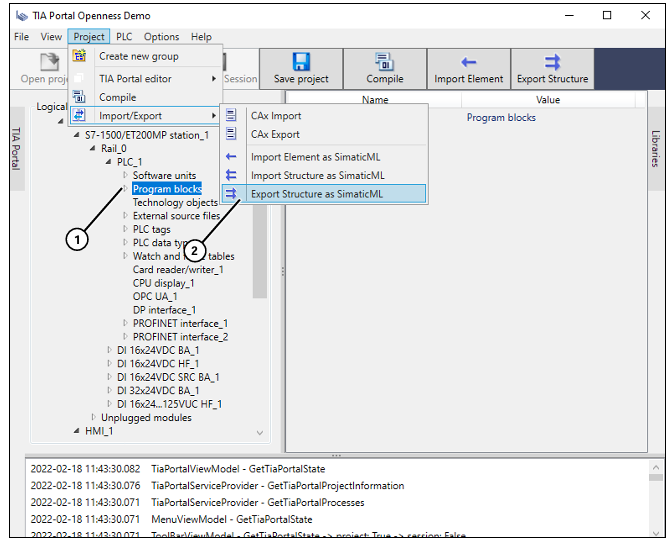 表 6-19
根据序列图（参见图 6-7），通过 ModuleProvider 在类 BaseProjectViewModel 的方法 InitProjectServiceProvider 中加载服务实例： 1ProjectServiceProvider =
2_moduleProvider.GetService(typeof(IProjectServiceProvider)) as
3IProjectServiceProvider;
根据所选的视图，在 LogicalProjectTreeViewModel 或 PhysicalProjectTreeViewModel 类中调用方法 ExportStructureAsync。在该方法中，在服务实例上调用同名方法。 1ProjectServiceProvider.ExportStructureAsync((string)SelectedItem.Header, (Guid)SelectedItem.Tag, LogicalTreeView);
6.11 “PLC” 菜单¶6.11.1 添加外部源¶如果项目树中高亮显示"外部源文件"，您可以通过菜单"PLC -> 源文件 -> 添加外部源"添加文件。将首先打开文件选择对话框，您可以在其中选择类型为 .awl、.scl、*.db 或 *.udt 的文件。打开选定的文件后，它将作为新文件添加。 图6-44 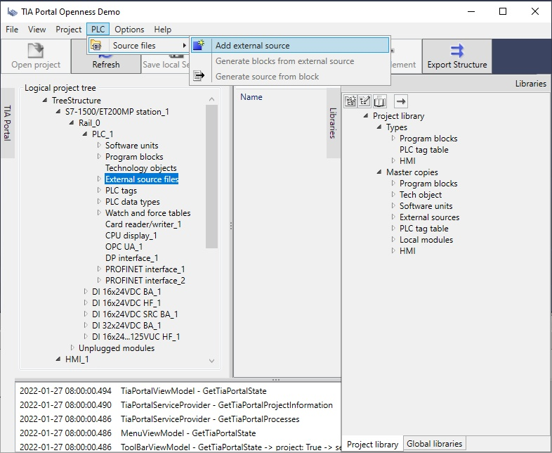 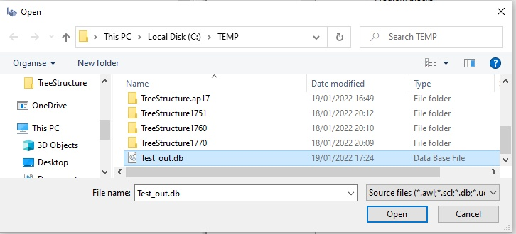 根据序列图（参见图 6-7），通过 ModuleProvider 在类 BaseProjectViewModel 的方法 InitProjectServiceProvider 中加载服务实例： 1ProjectServiceProvider =
2_moduleProvider.GetService(typeof(IProjectServiceProvider)) as
3IProjectServiceProvider;
在 BaseProjectViewModel 类中，调用方法 AddExternalSource，其中在服务实例上执行调用 ProjectServiceProvider.AddExternalSourceAsync(fileInfos, (string)SelectedItem.Header, (Guid)SelectedItem.Tag, LogicalTreeView);。所选文件的 FileInfo、高亮显示的元素的名称（参见图 6-44）和选定元素的 GUID 作为参数传递。调用中的第四个参数表示我们正在处理逻辑项目树，并且项目项应在其中找到。 GetProjectItem(header, tag, logical) 从相应的树视图（逻辑或物理视图）加载项目项。对于 TiaPortal 实例，请求独占访问操作 tiaPortal?.ExclusiveAccess(“Import element”)。 1var projectItem = GetProjectItem(header, tag, logical);
2if (projectItem != null)
3{
4 var destinationItem = projectItem.DeviceItem;
5 if (destinationItem != null)
6 {
7 var tiaPortal = _tiaPortalServiceProvider.GetTiaPortal() as TiaPortal;
8 using (var plcService = new PlcService(_traceLogService))
9 {
10 foreach (var fileInfo in sourceFileInfos)
11 {
12 using (var exclusiveAccess = tiaPortal?.ExclusiveAccess("Import element"))
13 {
14 using (var transaction = exclusiveAccess?.Transaction(CurrentProject, "Import element"))
15 {
16 plcService.AddExternalSource(destinationItem as PlcExternalSourceGroup, fileInfo);
17 transaction?.CommitOnDispose();
18 result = true;
19 }
20 }
21 }
22 }
23 }
24}
方法 AddExternalSource 在 PlcService 的实例上运行 (var plcService = new PlcService(_traceLogService))。该方法检查项目是否已分配具有此名称的外部源文件，如果是，则将其删除。然后，将选定的文件生成作为新的外部源并添加。 1var temp = plcExternalSourceGroup.ExternalSources.Find(Path.GetFileName(externalSourceFileInfo.FullName));
2temp?.Delete();
3plcExternalSourceGroup.ExternalSources.CreateFromFile(Path.GetFileName(externalSourceFileInfo.FullName), externalSourceFileInfo.FullName);
6.11.2 从外部源生成块¶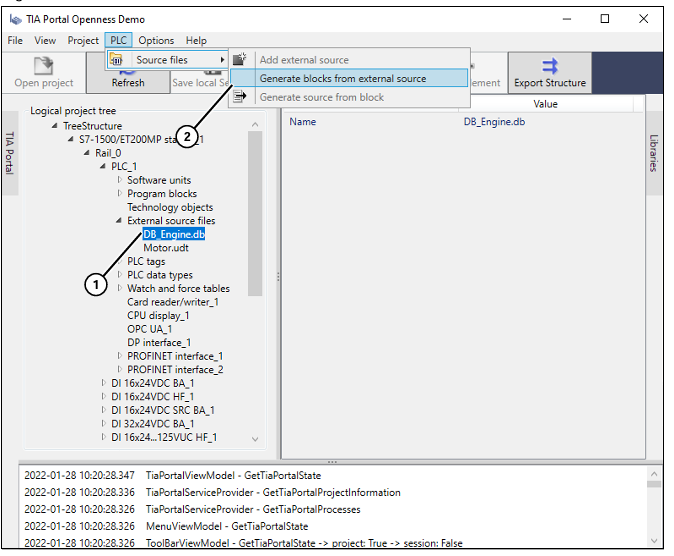 根据序列图（参见图 6-7），通过 ModuleProvider 在类 BaseProjectViewModel 的方法 InitProjectServiceProvider 中加载服务实例： 1ProjectServiceProvider =
2_moduleProvider.GetService(typeof(IProjectServiceProvider)) as
3IProjectServiceProvider;
在 BaseProjectViewModel 类中，调用方法 GenerateBlockFromSource，其中在服务实例上执行调用 ProjectServiceProvider.GenerateBlockFromSourceAsync((string)SelectedItem.Header, (Guid)SelectedItem.Tag, LogicalTreeView);。 项目树中高亮显示的元素的名称和 GUID（参见图 6-46，第 1 项），以及有关使用逻辑还是物理项目树的信息，用于搜索项目项。 1var projectItem = GetProjectItem(header, tag, logical);
2if (projectItem != null)
3{
4 var destinationItem = projectItem.DeviceItem;
5 if (destinationItem != null)
6 {
7 using (var plcService = new PlcService(_traceLogService))
8 {
9 plcService.GenerateBlockFromSource(destinationItem as PlcExternalSource);
10 result = true;
11 }
12 }
13}
表 6-20
TYPE "Motor"
VERSION : 0.1
STRUCT
Start : Bool;
Stop : Bool;
Temperature : Real;
RPM : Real;
State : Bool;
END_STRUCT;
END_TYPE
DATA_BLOCK "DB_Engine"
{ DB_Accessible_From_OPC_UA := 'FALSE' ;
DB_Accessible_From_Webserver := 'FALSE' ;
S7_Optimized_Access := 'TRUE' }
VERSION : 0.1
NON_RETAIN
VAR
Motor_1 : "Motor";
Motor_2 : "Motor";
Motor_3 : "Motor";
Motor_4 : "Motor";
END_VAR
BEGIN
END_DATA_BLOCK
| 2. | 从源文件生成目标块。 | 图6-46 图6-47 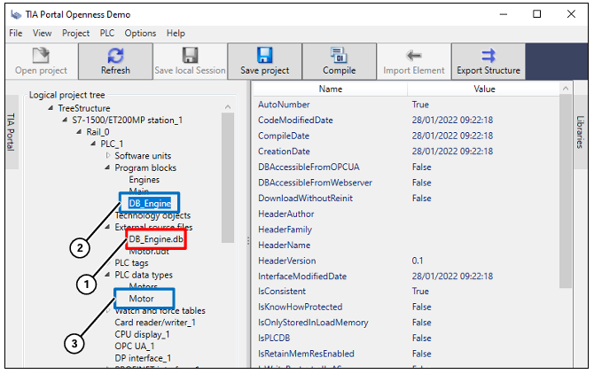 目标块是从源文件生成的（另参见图 6-47，第 1 项）。外部源中的类型（参见表 6-20，第 1 项）被分配给相应的区域（参见图 6-47，第 2 和第 3 项）。 6.11.3 从块生成源¶例如，如果您在项目树中高亮显示了 PLC 数据类型，则可以使用菜单"PLC -> 源文件 -> 从块生成源"（参见图 6-48）从此数据类型创建源文件。源文件可以在另一个项目中重用。 首先打开"保存文件"对话框（参见图 6-49）。这里，根据高亮显示的元素，您可以选择文件类型 .awl、.scl、*.db 或 *.udt 并输入文件名。 根据序列图（参见图 6-8），通过 ModuleProvider 在类 BaseProjectViewModel 的方法 InitProjectServiceProvider 中加载服务实例： 1ProjectServiceProvider =
2_moduleProvider.GetService(typeof(IProjectServiceProvider)) as
3IProjectServiceProvider;
在 BaseProjectViewModel 类中，调用方法 GenerateSourceFromBlock，其中在服务实例上执行调用 ProjectServiceProvider.GenerateSourceFromBlockAsync(destinationFileInfo, (string)SelectedItem.Header, (Guid)SelectedItem.Tag, LogicalTreeView);。用于搜索项目项的参数是目标文件的文件信息、高亮显示的元素的名称、其 GUID，以及有关使用逻辑还是物理项目树的信息。 1var projectItem = GetProjectItem(header, tag, logical);
2if (projectItem != null)
3{
4 var blockItem = projectItem.DeviceItem as IEngineeringInstance;
5 var blockAsSource = projectItem.DeviceItem as IEngineeringInstance;
6 if (blockItem != null)
7 {
8 do
9 {
10 blockItem = blockItem.Parent;
11 } while (!(blockItem is PlcSoftware));
12 using (var plcService = new PlcService(_traceLogService))
13 {
14 plcService.GenerateSourceFromBlock(blockItem as PlcSoftware, blockAsSource, destinationFileInfo, true);
15 result = true;
16 }
17 }
18}
实际的 API 调用在服务方法 plcService.GenerateSourceFromBlock 中执行。 1if (blockAsSource is PlcBlock plcBlock)
2{
3 if (withDependencies)
4 {
5 plcSoftware.ExternalSourceGroup.GenerateSource(new[] { plcBlock }, destinationFileInfo, GenerateOptions.WithDependencies);
6 }
7 else
8 {
9 plcSoftware.ExternalSourceGroup.GenerateSource(new[] { plcBlock }, destinationFileInfo, GenerateOptions.None);
10 }
11}
12if (blockAsSource is PlcType plcType)
13{
14 plcSoftware.ExternalSourceGroup.GenerateSource(new[] { plcType }, destinationFileInfo);
15}
图6-48 图6-49 6.12 "选项"菜单¶图6-50 应用程序的设置让您能够定义许多参数的值，这些参数应用程序在运行相应功能时会自动加载和使用。设置可以随时更改。仅当您希望使用不同版本的 TIA Portal 和/或 Openness API 时，才需要在更改后重新启动应用程序。所有其他设置仅在使用时加载。 6.12.1 设置¶图6-51 表 6-21
6.13 "帮助"菜单¶图6-52 6.13.1 关于 TIA Portal Openness Demo¶图6-53 表 6-22

| |||||||||||||||||||||||||||||||||||||||||||||||||||||||||||||||||||||||||||||||||||||||||||||||